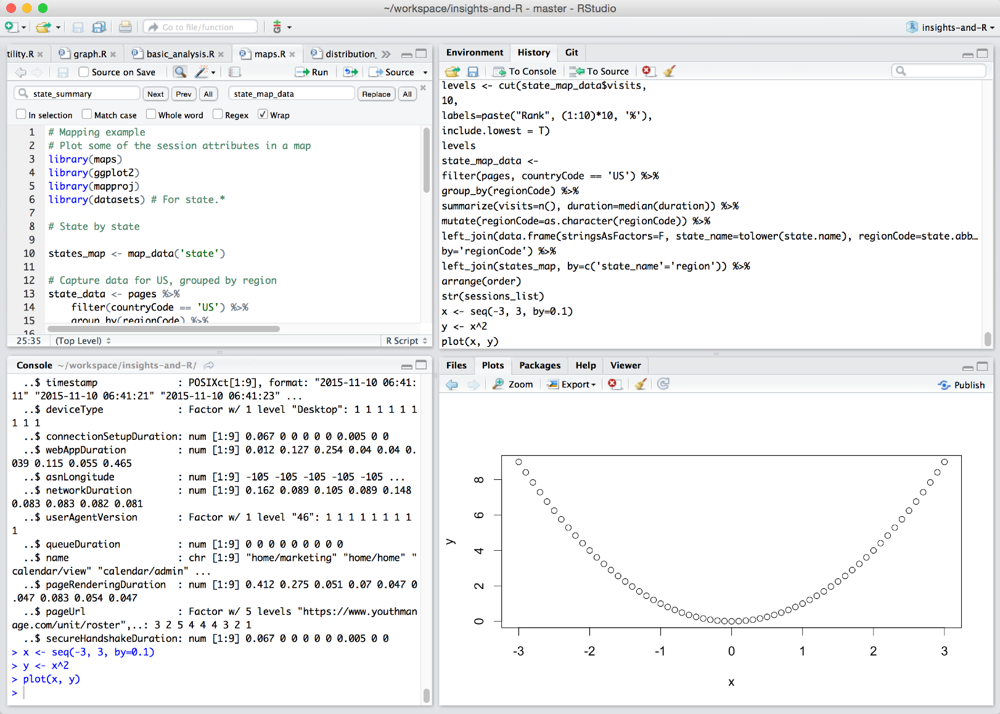
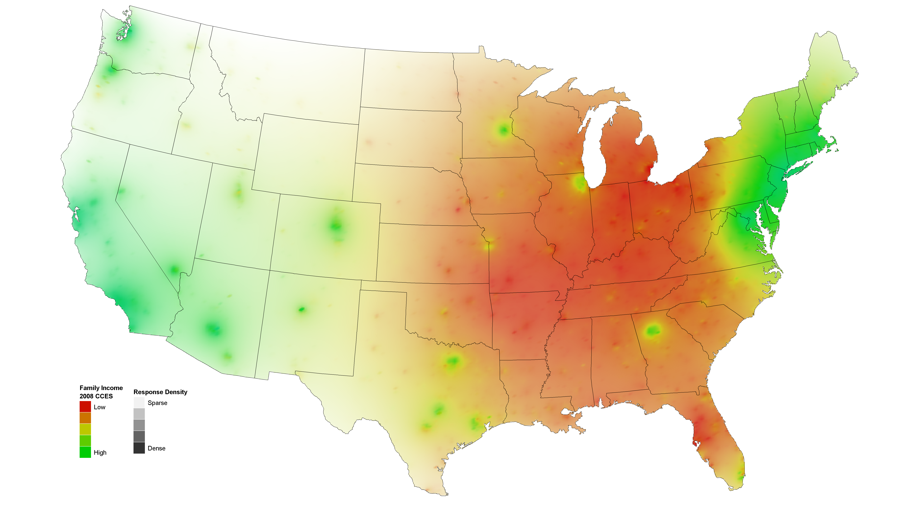

Basic Ingredients:
- R Environment for Statistical Computing
- Insights REST API
Bill Kayser
Distinguished Engineer, New Relic
Basic Ingredients:
Invoke the query action with your NRQL query:
curl -H "Accept: application/json" -H "X-Query-Key: YOUR_KEY_HERE" \
"https://insights-api.newrelic.com/v1/accounts/ACCOUNT_ID/query?nrql=NRQL_QUERY"
{"results":[{"average":0.9801766784452296}],"performanceStats":{"fileReadCount":2,"inspectedCount":903,"matchCount":283,"processCount":2,"rawBytes":205286,"decompressedBytes":205286,"fileProcessingTime":0,"mergeTime":0,"ioTime":0,"decompressionTime":0,"wallClockTime":10,"fullCacheHits":0,"partialCacheHits":0,"cacheMisses":0,"cacheSkipped":2,"maxInspectedCount":642,"minInspectedCount":261,"slowLaneFiles":0,"slowLaneFileProcessingTime":0,"slowLaneWaitTime":0,"runningQueriesTotal":2},"metadata":{"eventTypes":["PageView"],"eventType":"PageView","openEnded":true,"beginTime":"2015-11-11T15:09:34Z","endTime":"2015-11-11T16:09:34Z","beginTimeMillis":1447254574073,"endTimeMillis":1447258174073,"rawSince":"last_hour","rawUntil":"now","rawCompareWith":"","guid":"1afb-cd3c-a14d955d","routerGuid":"a61e26-6b21d6cbd","messages":[],"contents":[{"function":"average","attribute":"duration","simple":true,"openEnded":false}]}}

Invoke the Insights REST API and return the content as nested lists/vectors
library(httr)
call <- function(nrql_query) {
response <- GET(paste("https://insights-api.newrelic.com/v1/accounts/",
account_id, "/query", sep = ""), query = list(nrql = nrql_query),
as = "text", accept("application/json"), add_headers(`X-Query-Key` = api_key))
return(content(response))
}
call <- function(nrql_query) {
message(paste("Query:", nrql_query))
response <- GET(paste("https://insights-api.newrelic.com/v1/accounts/",
account_id, "/query", sep = ""), query = list(nrql = nrql_query),
as = "text", accept("application/json"), add_headers(`X-Query-Key` = api_key))
result <- content(response)
if (!is.null(result$error)) {
stop("Error in response: ", result$error)
}
if (!is.null(result$facets)) {
ldply(result$facets, as.data.frame)
} else if (names(result$results[[1]])[1] == "events") {
ldply(result$results[[1]]$events, as.data.frame)
} else {
stop("Unsupported result type; only facets and events supported now.")
}
}
api <- insights(account_id, api_key)
api$call('select name, duration from PageView limit 5')
session_ids <- api$get_top_session_ids(app_id, limit = 20)
sessions_list <- api$get_sessions(session_ids)
pages <- rbind.fill(sessions_list)
head(sort(unique(pages$name)), 10)
[1] "account/donorAuth.jsp" "account/givingHistory.jsp"
[3] "account/login.jsp" "account/newAccount.jsp"
[5] "account/passwordRequest.jsp" "admin/account/affiliate.jsp"
[7] "admin/account/affiliates.jsp" "admin/account/donor.jsp"
[9] "admin/account/donors.jsp" "admin/index.jsp"
install.packages('igraph')
library(igraph)
Pick a random session with at least 10 views of 5 different pages:
repeat {
session <- sample(sessions_list,1)[[1]]
if (nrow(session) > 10 && length(unique(session$name))> 5) break
}
Calculate the Transitions within that session
get_transitions <- function(session_events) {
n <- nrow(session_events)
if (n<2) return(data.frame())
from <- vector('character')
to <- vector('character')
duration <- vector('numeric')
for (i in 2:n) {
from[i-1] <- as.character(session_events[i-1, 'name'])
to[i-1] <- as.character(session_events[i, 'name'])
duration[i-1] <- session_events[i, 'duration']
}
session_id <- as.character(session_events$session[1])
return(data.frame(from=from, to=to, session=c(session_id), duration=duration))
}
edges <- get_transitions(session)
Create the list of nodes
nodes <- group_by(session, name) %>% summarize(count=n())
Create the graph data frame that will be used to generate the graph:
graph <- graph.data.frame(edges, nodes, directed=T)
V(graph)$label.color <- "black"
V(graph)$label.family <- 'Helvetica'
V(graph)$label.color <- 'black'
V(graph)$label.cex <- 0.8
V(graph)$label.dist <- 0.5
V(graph)$label.degree <- pi/2
V(graph)$color <- 'lightblue'
V(graph)$size <- 20
E(graph)$color <- '#CCCCCC'
E(graph)$arrow.size <- 1
E(graph)$width <- 1.0
Plot using different layout algorithms:
plot(graph, layout=layout.kamada.kawai)
plot(graph, layout=layout.circle)
plot(graph, layout=layout.grid)
# Linear scale function
scale <- function(domain, range) {
b <- (range[2] - range[1]) / (max(domain) - min(domain))
a <- range[1] - b * min(domain)
sapply(domain, function(d) { a + b * d })
}
# Set node size to scale with number of visits:
V(graph)$size <- scale(nodes$count, c(10,25))
# Set edge colors to scale with response time from gray to red
library(RColorBrewer)
pal <- colorRampPalette(c('gray', 'red'))
E(graph)$color <- pal(10)[scale(edges$duration, c(1,10))]
Create a histogram of pages betwen 0 and 20 second duration.
hist(pages$duration, breaks=seq(0,1+max(pages$duration), by=0.2), xlim=c(0,20))
plot(density(pages$duration), xlim=c(0, 15))
abline(v=mean(pages$duration), lwd=2, col='orange', lty=5)
abline(v=median(pages$duration), lwd=2, col='orange', lty=1)
legend(x='topright', col='orange', lwd=2, lty=c(5,1), legend=c('Mean', 'Median'))

Using maps project.
library(maps)
library(ggplot2)
library(mapproj)
regionCode)datasets library: state.abb, state.namestate_summary <- filter(pages, countryCode == 'US') %>%
group_by(regionCode) %>%
summarize(visits=n()) %>%
left_join(data.frame(cbind(state_name=tolower(state.name), regionCode=state.abb)))
state_map_data <- right_join(state_summary, map_data('state'), by=c('state_name'='region')) %>%
arrange(order)
q_visits <- quantile(state_summary$visits, seq(0, 1, length.out=10))
levels <- cut(state_map_data$visits,
q_visits,
labels=paste("Up to", round(q_visits[1:9]), "page views"),
include.lowest = T)
pal <- brewer.pal(9, 'YlOrRd')
ggplot(state_map_data) +
aes(x=long, y=lat, group=group, fill=levels) +
scale_fill_manual(values=pal) +
geom_polygon(fill='white', color='gray') +
geom_polygon(color='black') +
coord_map('globular') +
ggtitle("Traffic Density by State")
Many, many other libraries and tools!
Thank you to JustGive.org for allowing us to show their data.